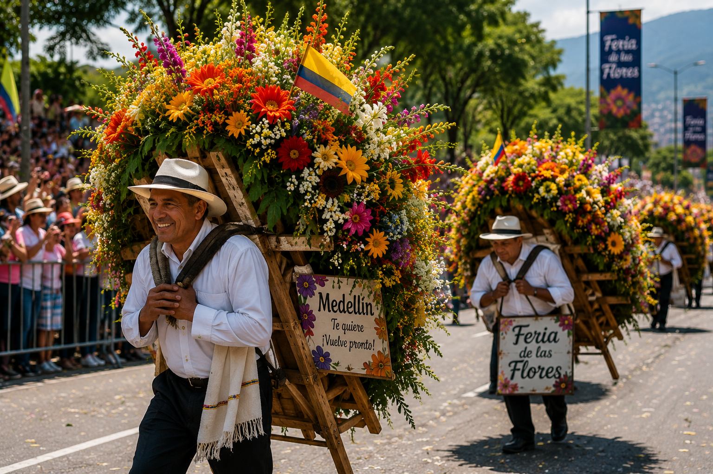

Historia de la Feria de las Flores
La Feria de las Flores nació en 1957 con el propósito de homenajear a los campesinos floricultores del corregimiento de Santa Elena. Desde entonces, se ha convertido en una de las celebraciones más representativas de Colombia, destacándose por promover la cultura, las tradiciones y el turismo en Medellín. Cada edición reúne miles de visitantes que disfrutan de eventos culturales, musicales y artísticos durante varios días.
